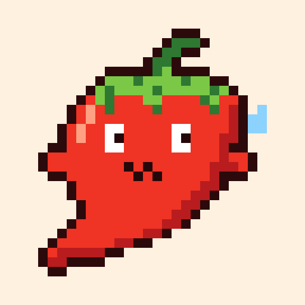

Load-test it, then see
where the time goes
An HTTP load generator with a live dashboard and a verdict in plain words. One binary, built to cost less than the server it tests.
Every phase, every request.DNS, connect, TLS, first byte and download, so the slow part has a name.
A verdict, not a wall of numbers.What held, what broke, and what to look at first.
Safe to hand to an agent.A JSON report with a schema, exit codes, and guardrails checked before a byte is sent.
A request, split
into five parts
A request a second, timed phase by phase. The longest one is the bottleneck, and pepe says which it is.
Raise the load
until it bends
Step by step to the concurrency you name. It stops when the line you drew is crossed, and reads off the capacity: 4,310 req/s at 120.

Change the code,
prove it
Two reports in, one verdict out: what moved, by how much, and whether it's beyond the noise. --gate fails the build on a regression.
Your agent runs it.
The guardrails hold.
Every mode is an MCP tool. Caps on host, count, rate and connections are checked before anything is sent, and a refusal is exit code 2 with the reason.
# next to the code: holds for every run here allow-host = [".staging.example.com", "localhost"] max-requests = 10000 max-rate = 500 max-concurrency = 64
{
"schema_version": 1,
"summary": {
"requests_per_second": 3920.4,
"latency": { "median_ms": 41.2, "p99_ms": 188.0 }
},
"spans": { "operations": [ { "name": "db.query orders", "share_percent": 38.5 } ] }
}
# Claude Code claude plugin marketplace add omarmhaimdat/pepe claude plugin install pepe@pepe # Codex codex mcp add pepe -- pepe mcp --max-requests 10000 --max-rate 500
--allow-hostOnly the hosts you name, every step and every row.--max-rateAn open loop at a rate you bound, never as fast as it goes.--dry-runWhat would be sent, where and how much, secrets masked.--fail-if 'p99 > 500ms'Exit code 4 when a line is crossed.Every mode,
one pepper
pepe URLLoad testLatency, throughput and errors live; pause, change the concurrency, open any request.
pepe pingPingA request a second, split by phase, on a graph, with what to look at.
pepe rampRampRaise the load step by step; find the level that held and the capacity.
pepe compareCompareWhat moved between two runs, as a verdict, a badge and a card.
pepe apiOpenAPIEvery endpoint of a spec under load at once: which are slow, which fail.
pepe flowFlowsA sequence of requests, each step fed by the one before.
pepe replayReplayAn access log's URLs in their real proportions, at another host.
pepe logsnginx logsThe request rate now against each minute, hour and day.
pepe mcpMCP serverThe modes as tools for an agent, with guardrails on every call.
Costs less than
the server it tests
So the numbers you read are the target's, not the load generator's.